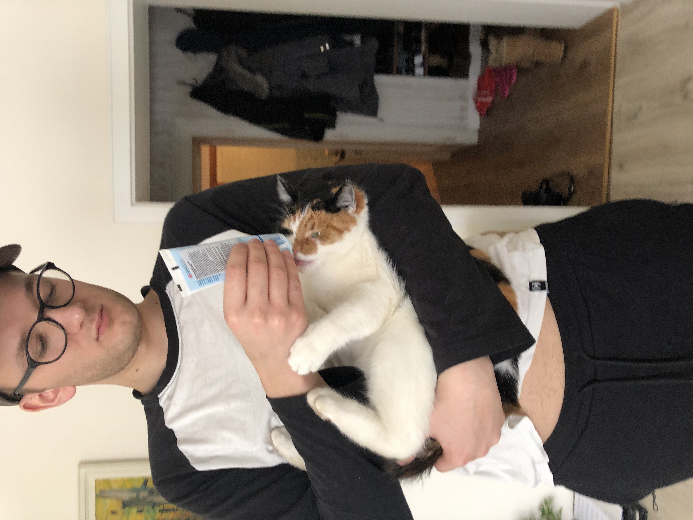

KAROL władca kotów
historia bohatera:
Urodzony 25 lat temu, już nie do końca młodzieniec.
Walczył ze swym młodszym bratem Beniaminem o władze w
ich pokoju.
Ostatecznie konflikt dalej jest nierostrzygnięty.
skórki:

KAROL standardowy

KAROL w samo południe
umiejętności:
- bierne - kocia mama : co trzeci autoatak wysyłą jednego kota do boju na 3 sec.
Koty posiadają życie zależne od poziomu bohatera oraz obrażenia wyskalowne w ten sam sposób.
-
Q - obrażenia : bohater obraża się i zadaje potężne obrażenia w małym obszarze.
W przypadku zabójstwa cooldown sie resetuje.
-
W - kąpiel : bohater bierze kąpiel i regeneruje część zdrowia.
W przypadku posiadania mikstury może użyć jej podczas trwania umiejętności,
aby otrzymać jej efekt od razu.
-
E - wystrzałowe E : EEEEEE EEEEEE, [po trafieniu stunuje na 1 sec. i zadaje obrażenia]
EEEEEEEE [naznacza wrogów]
-
R - murczyx zabij! : murczyx rzuca się na najbliższego wroga w zasięgu lub na oznaczego za
pomoca EEEEEEEEEEE.
Zadając obrażenia i przygważdżając go.